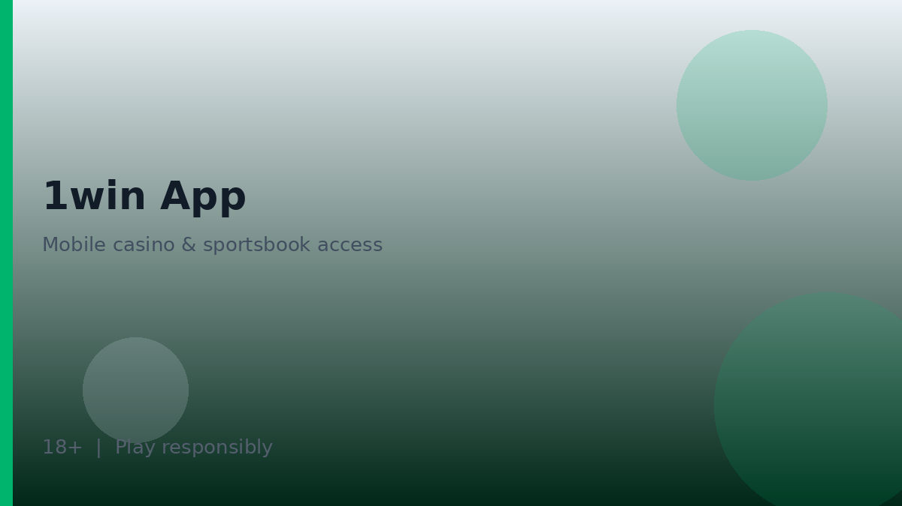
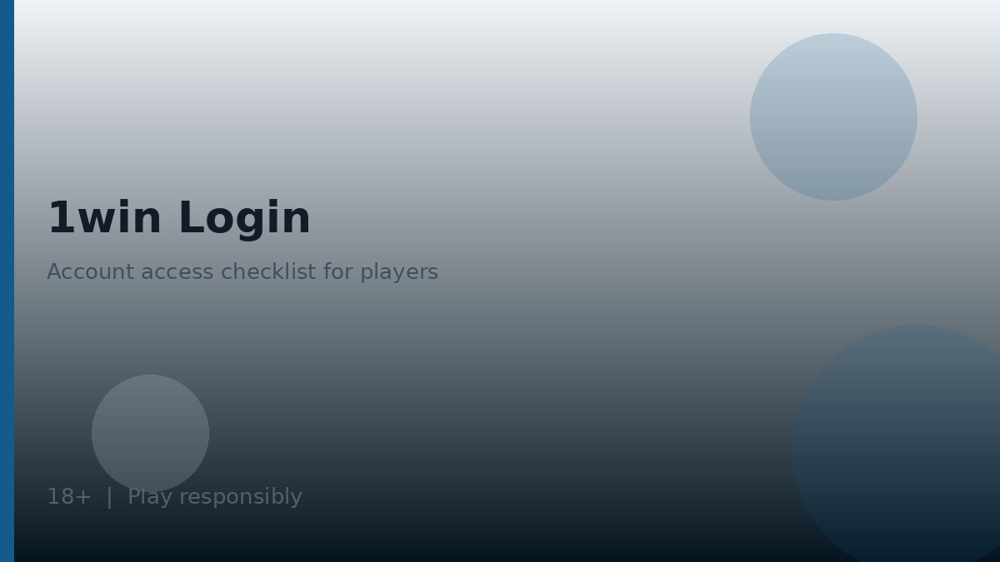
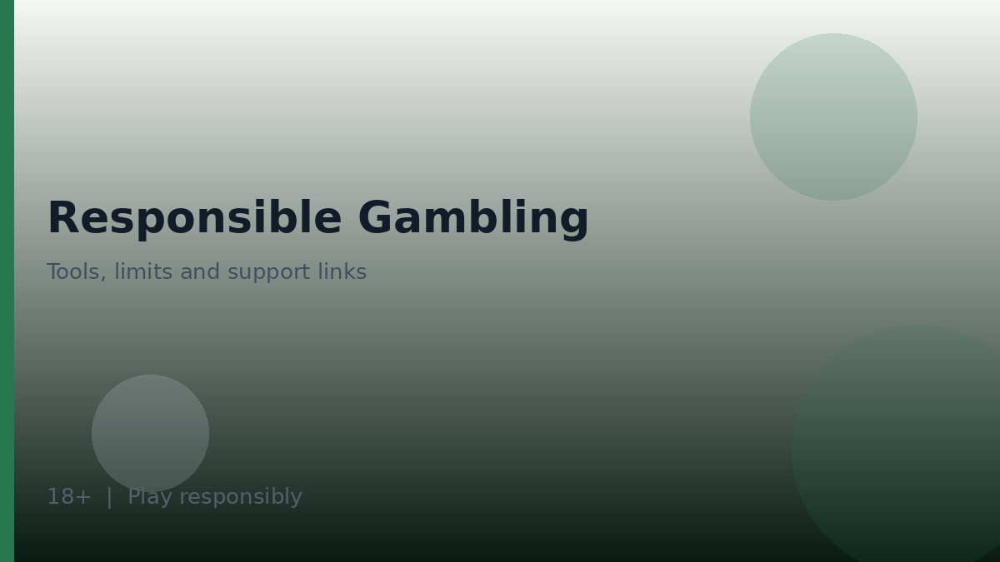

1win app versus mobile browser
The 1win app conversation usually starts with a practical choice: install a dedicated application, or use the mobile browser site. Both paths can work for sports, casino, and account management, but they differ in update habits, permission prompts, storage use, and how easy it is to confirm you are on a genuine distribution channel.

Affiliate disclosure: if partner links appear near download mentions or ratings, commissions do not change the advice to verify installers on the official operator site. Unofficial APKs from random blogs are a common security problem.
Browser play needs no sideloading. You bookmark the official domain, keep the browser updated, and rely on the site’s responsive layout. An app may add home-screen convenience, push notifications if you enable them, and sometimes faster relaunch—but only if the package is authentic and kept current.
Compare experiences yourself: log into the same account via browser and via any official app path the operator publishes, then note whether markets, cashier methods, and responsible-gambling tools appear with similar clarity. Feature parity is not something third parties can certify forever; releases change. See also the main 1win overview and 1win login security notes.
When friends send “latest APK” links in messaging groups, treat them as untrusted. Malicious packages can overlay fake login screens, harvest passwords, or drain wallets. The safer habit is boring: open the operator site yourself, follow its documented download path, or stay in the browser.
Android and iOS notes without invented store claims
Availability of a 1win app on major stores can differ by country, store policy, and operator distribution strategy. Some brands publish an Android package through their website, some use store listings where permitted, and some emphasise progressive web behaviour. Treat any download button on a third-party site as untrusted until you confirm it matches the operator’s own instructions.
| Path | Typical upside | Typical caution |
|---|---|---|
| Mobile browser | No installer; easy to bookmark official URL | Session cookies and phishing pages still matter |
| Official Android package if offered | Home-screen icon and possibly richer prompts | Only install from operator-documented sources |
| iOS options if offered | Familiar device integration | Follow operator guidance; avoid unknown profiles |
| Third-party mirror APKs | None worth the risk | Malware and credential theft risk |
- Type or paste the official domain yourself when possible.
- Refuse installers attached to emails or messaging apps from strangers.
- Check package permissions and revoke anything unnecessary after install.
- Keep OS security patches current on the device.
- Prefer browser play if you cannot verify an installer.
We do not invent claims that an app is or is not on a particular store today. Check the operator’s help centre or download page for the method that applies to your device now.
Permissions, notifications, and update hygiene
Permission prompts deserve slow reading. Camera or file access may be requested for document uploads during KYC. Location prompts are not always required for play—decline what you do not need. Notification permission is optional entertainment; it can also nudge you into more sessions than you planned, so consider keeping it off if you are building healthier habits.
| Item | Why it matters | Suggested habit |
|---|---|---|
| Storage / files | Needed for some document uploads | Grant temporarily during KYC if required |
| Camera | Sometimes used for document capture | Disable afterwards in system settings if unused |
| Notifications | Can increase session frequency | Enable only if you truly want alerts |
| Auto-updates | Security fixes arrive faster | Keep OS and app channels updated |
| App overlays | Accessibility misuse can steal inputs | Avoid unknown overlay apps while logged in |
- Install only after confirming the source on the official site.
- Review permissions on day one and again after major updates.
- Update when security patches are available rather than postponing indefinitely.
- Log out on shared devices after each session.
- Reinstall from the official path if the app starts requesting odd new permissions.

Update hygiene also means watching for fake update pop-ups inside other apps or browsers. Genuine updates should follow the same distribution path you originally verified. If a pop-up demands urgent payment details to unlock an update, stop and navigate manually to the official site.
Feature parity: app versus desktop expectations
Players sometimes assume every sports market, live table, or cashier method on desktop appears identically in the 1win app. In practice, interfaces are optimised differently, and some tools may be rearranged or temporarily missing after a release. Validate features in the build you actually use.
| Feature area | What to compare | If something is missing |
|---|---|---|
| Sports markets | Same events and rule links | Refresh or try browser; ask support if persistent |
| Casino lobby | Search, filters, game info access | Confirm region settings and app version |
| Cashier | Methods and verification prompts | Complete KYC; do not use third-party payment agents |
| Responsible tools | Limits, time-out, self-exclusion entry points | Use browser if tools are easier to find there |
| Support | Chat or ticket access | Keep ticket numbers for follow-up |
- Note your app version before contacting support about a missing feature.
- Clear cache only after you understand you may need to log in again.
- Avoid modified clients that promise extra features; they compromise accounts.
- Read 1win casino and 1win aviator for product behaviour independent of the shell you use.
For Argentina-facing readers using English guidance, language settings in the app may still default to another locale. Switch languages in settings if available, and confirm legal and payment notices in the language displayed. Cross-check geo notes on 1win argentina.
When the browser is the safer default
If you are unsure about sideloading, if your device blocks unknown sources and you do not want to change that, or if you share a device with others, the mobile browser is often the safer default. Bookmark the official URL, enable browser update notifications, and use strong account security as described on the 1win login page.
- Create a bookmark folder for the official domain only.
- Refuse browser extensions that claim to predict crash outcomes.
- Use a unique password and 2FA if offered.
- End sessions with logout on shared hardware.
- Keep exploring promotions only after reading full T&Cs on the bonus code page concepts.

Mobile convenience should never outrank account security. The 1win app is a delivery channel for the same underlying entertainment products, with the same need for budgets, breaks, and adult-only access. Prefer verified channels, review permissions, and treat update prompts with healthy scepticism unless they come from the path you already trust.
Before you travel or change SIM cards, confirm that login alerts still reach a channel you control. Phone-number changes can interrupt one-time codes. Update contact details inside the official account settings rather than through informal chat contacts who offer to “help restore” access. That habit protects both browser and app users.
Finally, keep storage tidy: uninstall abandoned betting apps you no longer use, revoke their permissions, and remove leftover installers from downloads folders. A clean device makes it easier to notice when a new lookalike icon appears. Pair that hygiene with the evaluation mindset on the homepage and you reduce a large share of mobile-specific account risk around the 1win app experience. When something feels off, pause deposits first and verify the channel second—order matters.
Further practical notes for careful readers
Readers using 1win app materials as orientation should keep three habits in parallel: verify the official access path, set entertainment budgets before depositing, and re-read operator terms whenever a promotion or product area changes. Those habits travel with you from homepage summaries into specialist articles without requiring you to memorise every interface label.
When something on a third-party site conflicts with the live cashier or written terms, favour the live product and the written terms. Screenshots age quickly. Informal chat summaries omit footnotes. Your own notes, dated and linked to the version of the terms you saw, will serve you better during support conversations than a collage of social-media claims.
Product-area map you can reuse on any visit
Whether you open sports, casino, live tables or crash titles, keep the same mental map: entertainment first, verification second, stake size third. The diagram below summarises the product buckets most multi-vertical brands expose inside one account.
- Sports needs market-rule literacy before kick-off or tip-off.
- Casino lobbies need info-panel reading before the first spin.
- Live tables add connection quality as a practical factor.
- Crash titles add a cash-out timing decision that does not remove house edge.
| Check | What good looks like | Red flag |
|---|---|---|
| Domain authenticity | Typed or bookmarked official URL | Links from cold DMs or pop-ups |
| Age gate | Clear 18+ requirement before play | No age notice anywhere |
| Responsible tools | Deposit/loss/time limits visible | No limit controls at all |
| Terms access | Bonus and account terms linked near offers | Promo claims without T&Cs |
Evaluation sequence before any deposit
A calm sequence beats improvisation. Work left to right through domain authenticity, age eligibility, cashier visibility, limit tools and written terms. Skipping a step is how phishing pages and misunderstood bonuses slip through.
- Confirm you are on a genuine domain.
- Confirm you meet the 18+ requirement where you live.
- Open the cashier and note methods shown to your account.
- Locate deposit, loss and time-limit tools if offered.
- Read bonus and account terms before accepting any offer.
| Parameter | Safer habit | Why |
|---|---|---|
| Bankroll | Set a loss limit before opening the lobby | Stops chase behaviour mid-session |
| Time | Use a reality-check or phone timer | Short rounds compress time perception |
| Games | Pick one product area per session | Reduces impulsive switching |
Responsible gambling
18+. Casino games, sports betting and crash titles discussed on this site are intended for adults aged 18 and over only. Gambling can be addictive - please play responsibly and never stake more than you can afford to lose.
- International support information: BeGambleAware.
- Advice and treatment resources: GamCare.
- If you are in Argentina, also look for locally available counselling and helpline resources through public health channels, and use any deposit/loss/time limits the operator provides.
1win Argentina Guide publishes informational reviews and checklists. We do not invent licence numbers or claim UK Gambling Commission status for operators without verification in data/casinos/. Nothing on this site is financial or gambling advice, and no outcome is promised.